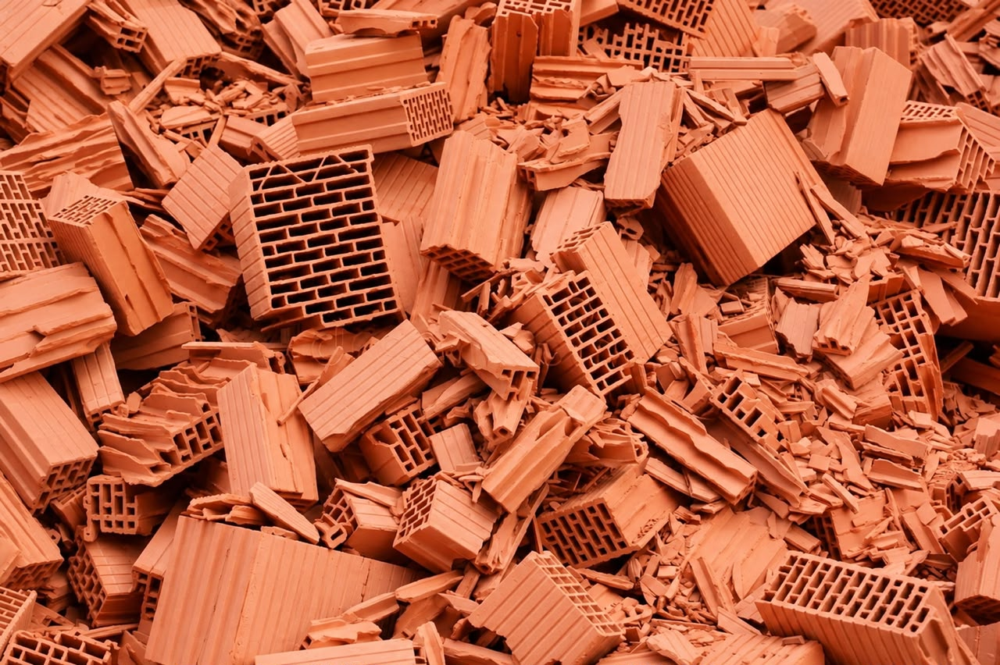
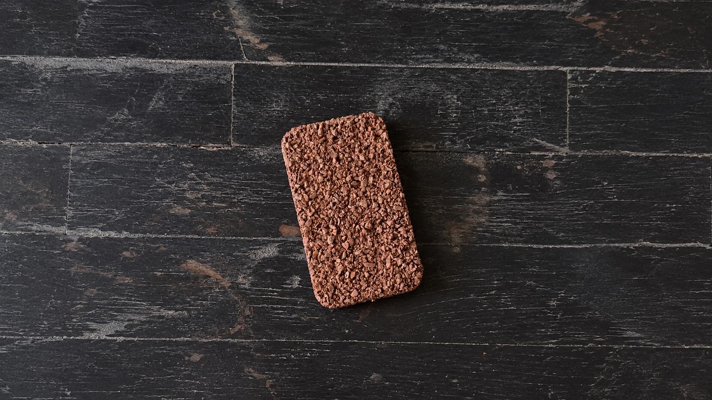

STUDENT / 01
Anastasija Smolović
University UNION Nikola Tesla, Faculty of Construction Management, Architecture and Urbanism, Belgrade
Material study · Waste 2 Value
Material process / 6 steps
An old brick.
A new possibility.
We explore how a discarded brick can be recycled and transformed into a new, usable material.
Explore the project
Waste 2 Value documents our exploration of recycling an old brick and creating a new usable one. We want to make material reuse visible—and ask how construction waste might become a resource.
Our project is an investigation into sustainability, innovation, and the value held in materials that are often discarded.
Sustainability · Innovation · Material reuse
Six steps · One material
Follow the project in order, from preparing and dividing the material through mixing, integrating, drying, and testing.
01 / 06
Photographs 01–04
02 / 06
Photos 1–4
03 / 06
Photos 1–4
04 / 06
Photos 1–4
05 / 06
Photos 1–4
Project film
A closer look at Waste 2 Value. Led by giz in collaboration with University Ss Cyril and Methodius in Skopje Faculty of Technology and Metallurgy from 2 to 6 November 2026.
Waste 2 Value · Project film
06 / 06
Testing phase video
Testing phase
Eco friendly brick, 0 Energy needed, 0 Construction Waste.
The people behind the project
Meet the students and professors contributing to Waste 2 Value.

STUDENT / 01
University UNION Nikola Tesla, Faculty of Construction Management, Architecture and Urbanism, Belgrade
STUDENT / 02
University ISA BOLETINI, Faculty of Mechanical and Computer Engineering, Cloud and Edge Computing, Mitrovica
STUDENT / 03
University of Belgrade, Faculty of Architecture
STUDENT / 04
University HAXHI ZEKA, Peja
STUDENT / 05
University of Ss Cyril and Methodius, Faculty of technology and metallurgy, Design and Engineering of clothes, Skopje
STUDENT / 06
University of Ss Cyril and Methodius, Faculty of technology and metallurgy, Design and Engineering of clothes, Skopje
PROFESSOR / 01
University of Ss Cyril and Methodius, Faculty of Technology and Metallurgy, Department of Inorganic Technology, Skopje
PROFESSOR / 02
University of Ss Cyril and Methodius, Faculty of Technology and Metallurgy, Department of Inorganic Technology, Skopje
PROFESSOR / 03
University of Ss Cyril and Methodius, Faculty of Technology and Metallurgy, Department of Inorganic Technology, Skopje